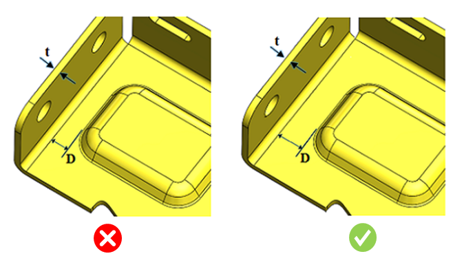

エンボス形状のエッジと曲げ部との最小距離を板金の板厚で割った比率は、ユーザーが指定した値以上である必要があります。
エンボス加工は、板金設計における成形工程の一部です。設計時には、せん断や変形を防ぐために、エンボスと曲げとの最小距離を確保する必要があります。
一般的に、設計者はこのような問題を防止するために、エンボスと曲げの間に十分な隙間を確保する必要があります。
一般的な指針として、エンボスと曲げとの最小推奨距離は、板厚の5倍以上である必要があります。
DFMProは、エンボスと曲げとの距離を識別し、その距離と板厚との比率を算出します。この比率は、構成された比率と照合して検証されます。
ユーザーは、デフォルトで構成されている比率を編集することができます。

ここでは、
t = 板厚
D = エンボスから曲げまでの最小距離